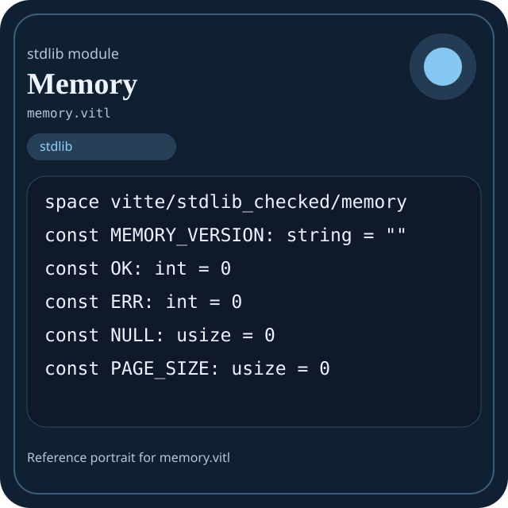

Stdlib module memory.vitl
This page is a wiki-style reference for one concrete stdlib file. It explains what the file owns, where it fits in the family, and how to decide whether this is the right surface to depend on.

memory.vitl.Family: stdlib
Kind: public stdlib surface
Page style: this reference follows the same “encyclopedic card + portrait + usage contract” logic as the keyword pages, but for stdlib modules.
Summary
- Overview
- Purpose
- Taxonomy
- Implementation profile
- Top-level API inventory
- Position in family
- Declaration map
- Representative signatures
- How to use this module
- User example
- Keyword coverage
- Source shape
- Source landmarks
- Source organization
- Complete API catalog
- Integration boundaries
- Composition guidance
- Relationship table
- Neighbor modules
Overview
| Field | Value |
|---|---|
| Path | memory.vitl |
| Family | stdlib |
| Kind | public stdlib surface |
| Line count | 655 |
| Declared procedures | 137 |
| Declared forms/picks | 16 |
`memory.vitl` is a public stdlib surface inside the `stdlib` family. It should be read as one focused slice of the broader family responsibility: Top-level map of the Vitte standard library and the responsibilities owned by each family.
Purpose
This file should be chosen because of responsibility, not because its name “sounds close enough”. Inside the stdlib family, it carries one focused part of the contract and keeps that responsibility separate from neighboring concerns.
- Domain values start in `core` and `strings`.
- Grouped data moves through `collections` or `data`.
- Structured export goes through `json` and `encoding`.
- Filesystem or process interaction goes through `path`, `io`, `os`, or `sysinfo`.
- Explicit runtime coordination goes through `async`, `threading`, `kernel`, or `ffi`.
Taxonomy
Think of this page as a generated encyclopedia entry rather than a hand-written tutorial. The goal is to show what kind of module this is, how dense it is, and what reading strategy makes sense before depending on it.
- Large algorithm surface: this file exposes many procedures and likely acts as a domain toolkit rather than a single thin wrapper.
- Owns domain vocabulary: the module declares data shapes in addition to executable helpers, so its types are part of the contract.
- Has tuning constants: part of the module behavior is controlled by named constants that document default precision, limits, or policy.
- Minimal top-level dependencies: the module reads as mostly self-contained from its opening declarations.
Implementation profile
This profile is inferred directly from the source text. It does not replace reading the file, but it tells you quickly whether the module is mostly declarative, loop-heavy, branch-heavy, or organized around many small exits.
| Signal | Count | What it suggests |
|---|---|---|
if | 0 | Branching density and local decision-making. |
while | 0 | Loop-heavy or iterative implementation style. |
for | 0 | Collection-style traversal at source level. |
match | 0 | Variant-driven branching or grammar-style decoding. |
let | 0 | Local state and intermediate value density. |
give | 137 | Number of explicit exit points and result shaping. |
Top-level API inventory
| Surface | Items |
|---|---|
| Procedures | memory_ok, memory_error, is_null, non_null, align_up, align_down, is_aligned, align_ptr, page_align_up, page_align_down, page_index, page_addr |
| Forms | MemoryResult, MemoryBlock, MemoryRegion, Page, PageRange, Heap, Arena, Pool, SlabClass, SlabAllocator, ByteBuffer, MemoryStats |
| Picks | MemoryStatus, AllocKind, PageState |
| Constants | MEMORY_VERSION, OK, ERR, NULL, PAGE_SIZE, HUGE_PAGE_SIZE, DEFAULT_ALIGN, CACHE_LINE_SIZE, KB, MB, GB, MEM_READ |
| Exports | none declared at top level |
Imported surfaces
This file does not advertise a top-level `use` surface in its opening declarations. That often means it is either self-contained or an aggregation layer.
Position in family
This file is module 5 of 15 in the stdlib family when ordered by path. By procedure count it ranks 3, and by line count it ranks 3. Those ranks are useful as rough signals of breadth, not as quality judgments.
Declaration map
The declaration map turns raw source into a scan-friendly catalog. It is useful when the file is large enough that a reader wants to orient by kinds of surfaces first.
| Line | Name | Kind | Role |
|---|---|---|---|
| 1 | vitte/stdlib_checked/memory | space | Declares the namespace that anchors this file in the stdlib tree. |
| 9 | MEMORY_VERSION | const | Defines a named constant reused across the module. |
| 11 | OK | const | Defines a named constant reused across the module. |
| 13 | ERR | const | Defines a named constant reused across the module. |
| 15 | NULL | const | Defines a named constant reused across the module. |
| 17 | PAGE_SIZE | const | Defines a named constant reused across the module. |
| 19 | HUGE_PAGE_SIZE | const | Defines a named constant reused across the module. |
| 21 | DEFAULT_ALIGN | const | Defines a named constant reused across the module. |
| 23 | CACHE_LINE_SIZE | const | Defines a named constant reused across the module. |
| 25 | KB | const | Defines a named constant reused across the module. |
| 27 | MB | const | Defines a named constant reused across the module. |
| 29 | GB | const | Defines a named constant reused across the module. |
| 31 | MEM_READ | const | Defines a named constant reused across the module. |
| 33 | MEM_WRITE | const | Defines a named constant reused across the module. |
| 35 | MEM_EXEC | const | Defines a named constant reused across the module. |
| 37 | MEM_USER | const | Defines a named constant reused across the module. |
| 39 | MEM_KERNEL | const | Defines a named constant reused across the module. |
| 41 | MEM_DEVICE | const | Defines a named constant reused across the module. |
| 43 | MEM_DMA | const | Defines a named constant reused across the module. |
| 45 | MemoryStatus | pick | Introduces a tagged variant type used to model distinct outcomes. |
| 49 | AllocKind | pick | Introduces a tagged variant type used to model distinct outcomes. |
| 53 | PageState | pick | Introduces a tagged variant type used to model distinct outcomes. |
| 57 | MemoryResult | form | Introduces a structured data shape that other procedures can exchange. |
| 61 | MemoryBlock | form | Introduces a structured data shape that other procedures can exchange. |
| 65 | MemoryRegion | form | Introduces a structured data shape that other procedures can exchange. |
| 69 | Page | form | Introduces a structured data shape that other procedures can exchange. |
| 73 | PageRange | form | Introduces a structured data shape that other procedures can exchange. |
| 77 | Heap | form | Introduces a structured data shape that other procedures can exchange. |
| 81 | Arena | form | Introduces a structured data shape that other procedures can exchange. |
| 85 | Pool | form | Introduces a structured data shape that other procedures can exchange. |
| 89 | SlabClass | form | Introduces a structured data shape that other procedures can exchange. |
| 93 | SlabAllocator | form | Introduces a structured data shape that other procedures can exchange. |
| 97 | ByteBuffer | form | Introduces a structured data shape that other procedures can exchange. |
| 101 | MemoryStats | form | Introduces a structured data shape that other procedures can exchange. |
| 105 | MemoryMap | form | Introduces a structured data shape that other procedures can exchange. |
| 109 | memory_ok | proc | Represents one top-level surface in the file contract and should be read as part of the module boundary. |
| 113 | memory_error | proc | Represents one top-level surface in the file contract and should be read as part of the module boundary. |
| 117 | is_null | proc | Represents one top-level surface in the file contract and should be read as part of the module boundary. |
| 121 | non_null | proc | Represents one top-level surface in the file contract and should be read as part of the module boundary. |
| 125 | align_up | proc | Represents one top-level surface in the file contract and should be read as part of the module boundary. |
| 129 | align_down | proc | Represents one top-level surface in the file contract and should be read as part of the module boundary. |
| 133 | is_aligned | proc | Represents one top-level surface in the file contract and should be read as part of the module boundary. |
| 137 | align_ptr | proc | Represents one top-level surface in the file contract and should be read as part of the module boundary. |
| 141 | page_align_up | proc | Represents one top-level surface in the file contract and should be read as part of the module boundary. |
| 145 | page_align_down | proc | Represents one top-level surface in the file contract and should be read as part of the module boundary. |
| 149 | page_index | proc | Represents one top-level surface in the file contract and should be read as part of the module boundary. |
| 153 | page_addr | proc | Represents one top-level surface in the file contract and should be read as part of the module boundary. |
| 157 | page_offset | proc | Represents one top-level surface in the file contract and should be read as part of the module boundary. |
| 161 | pages_for_size | proc | Represents one top-level surface in the file contract and should be read as part of the module boundary. |
| 165 | bytes_to_kb | proc | Represents one top-level surface in the file contract and should be read as part of the module boundary. |
| 169 | bytes_to_mb | proc | Represents one top-level surface in the file contract and should be read as part of the module boundary. |
| 173 | bytes_to_gb | proc | Represents one top-level surface in the file contract and should be read as part of the module boundary. |
| 177 | kb | proc | Represents one top-level surface in the file contract and should be read as part of the module boundary. |
| 181 | mb | proc | Represents one top-level surface in the file contract and should be read as part of the module boundary. |
| 185 | gb | proc | Represents one top-level surface in the file contract and should be read as part of the module boundary. |
| 189 | checked_add | proc | Represents one top-level surface in the file contract and should be read as part of the module boundary. |
| 193 | checked_mul | proc | Represents one top-level surface in the file contract and should be read as part of the module boundary. |
| 197 | ptr_add | proc | Represents one top-level surface in the file contract and should be read as part of the module boundary. |
| 201 | ptr_sub | proc | Represents one top-level surface in the file contract and should be read as part of the module boundary. |
| 205 | ptr_diff | proc | Represents one top-level surface in the file contract and should be read as part of the module boundary. |
| 209 | ptr_in_range | proc | Represents one top-level surface in the file contract and should be read as part of the module boundary. |
| 213 | ranges_overlap | proc | Represents one top-level surface in the file contract and should be read as part of the module boundary. |
| 217 | block_new | proc | Represents one top-level surface in the file contract and should be read as part of the module boundary. |
| 221 | block_empty | proc | Represents one top-level surface in the file contract and should be read as part of the module boundary. |
| 225 | block_end | proc | Represents one top-level surface in the file contract and should be read as part of the module boundary. |
| 229 | block_contains | proc | Represents one top-level surface in the file contract and should be read as part of the module boundary. |
| 233 | block_is_valid | proc | Represents one top-level surface in the file contract and should be read as part of the module boundary. |
| 237 | region_new | proc | Represents one top-level surface in the file contract and should be read as part of the module boundary. |
| 241 | region_end | proc | Represents one top-level surface in the file contract and should be read as part of the module boundary. |
| 245 | region_contains | proc | Represents one top-level surface in the file contract and should be read as part of the module boundary. |
| 249 | region_is_readable | proc | Represents one top-level surface in the file contract and should be read as part of the module boundary. |
| 253 | region_is_writable | proc | Represents one top-level surface in the file contract and should be read as part of the module boundary. |
| 257 | region_is_executable | proc | Represents one top-level surface in the file contract and should be read as part of the module boundary. |
| 261 | region_is_kernel | proc | Represents one top-level surface in the file contract and should be read as part of the module boundary. |
| 265 | region_is_user | proc | Represents one top-level surface in the file contract and should be read as part of the module boundary. |
| 269 | memory_map_empty | proc | Owns a concrete data shape or the operations that maintain it. |
| 273 | memory_map_add | proc | Owns a concrete data shape or the operations that maintain it. |
| 277 | memory_map_find | proc | Owns a concrete data shape or the operations that maintain it. |
| 281 | memory_map_usable_regions | proc | Owns a concrete data shape or the operations that maintain it. |
| 285 | heap_new | proc | Represents one top-level surface in the file contract and should be read as part of the module boundary. |
| 289 | heap_remaining | proc | Represents one top-level surface in the file contract and should be read as part of the module boundary. |
| 293 | heap_alloc | proc | Represents one top-level surface in the file contract and should be read as part of the module boundary. |
| 297 | heap_last_block | proc | Represents one top-level surface in the file contract and should be read as part of the module boundary. |
| 301 | heap_contains | proc | Represents one top-level surface in the file contract and should be read as part of the module boundary. |
| 305 | heap_reset | proc | Represents one top-level surface in the file contract and should be read as part of the module boundary. |
| 309 | heap_stats | proc | Represents one top-level surface in the file contract and should be read as part of the module boundary. |
| 313 | arena_new | proc | Represents one top-level surface in the file contract and should be read as part of the module boundary. |
| 317 | arena_remaining | proc | Represents one top-level surface in the file contract and should be read as part of the module boundary. |
| 321 | arena_current | proc | Represents one top-level surface in the file contract and should be read as part of the module boundary. |
| 325 | arena_alloc | proc | Represents one top-level surface in the file contract and should be read as part of the module boundary. |
| 329 | arena_alloc_aligned | proc | Represents one top-level surface in the file contract and should be read as part of the module boundary. |
| 333 | arena_last_addr | proc | Represents one top-level surface in the file contract and should be read as part of the module boundary. |
| 337 | arena_reset | proc | Represents one top-level surface in the file contract and should be read as part of the module boundary. |
| 341 | arena_mark | proc | Represents one top-level surface in the file contract and should be read as part of the module boundary. |
| 345 | arena_restore | proc | Represents one top-level surface in the file contract and should be read as part of the module boundary. |
| 349 | arena_used | proc | Represents one top-level surface in the file contract and should be read as part of the module boundary. |
| 353 | arena_full | proc | Represents one top-level surface in the file contract and should be read as part of the module boundary. |
| 357 | pool_new | proc | Represents one top-level surface in the file contract and should be read as part of the module boundary. |
| 361 | pool_block_addr | proc | Represents one top-level surface in the file contract and should be read as part of the module boundary. |
| 365 | pool_index_of | proc | Represents one top-level surface in the file contract and should be read as part of the module boundary. |
| 369 | pool_has_free | proc | Represents one top-level surface in the file contract and should be read as part of the module boundary. |
| 373 | pool_alloc | proc | Represents one top-level surface in the file contract and should be read as part of the module boundary. |
| 377 | pool_last_alloc_addr | proc | Represents one top-level surface in the file contract and should be read as part of the module boundary. |
| 381 | pool_free | proc | Represents one top-level surface in the file contract and should be read as part of the module boundary. |
| 385 | pool_used | proc | Represents one top-level surface in the file contract and should be read as part of the module boundary. |
| 389 | pool_free_count | proc | Represents one top-level surface in the file contract and should be read as part of the module boundary. |
| 393 | pool_capacity | proc | Represents one top-level surface in the file contract and should be read as part of the module boundary. |
| 397 | pool_contains | proc | Represents one top-level surface in the file contract and should be read as part of the module boundary. |
| 401 | slab_class | proc | Represents one top-level surface in the file contract and should be read as part of the module boundary. |
| 405 | slab_new | proc | Represents one top-level surface in the file contract and should be read as part of the module boundary. |
| 409 | slab_find_class | proc | Represents one top-level surface in the file contract and should be read as part of the module boundary. |
| 413 | slab_alloc | proc | Represents one top-level surface in the file contract and should be read as part of the module boundary. |
| 417 | slab_free | proc | Represents one top-level surface in the file contract and should be read as part of the module boundary. |
| 421 | slab_free_blocks | proc | Represents one top-level surface in the file contract and should be read as part of the module boundary. |
| 425 | page_new | proc | Represents one top-level surface in the file contract and should be read as part of the module boundary. |
| 429 | page_is_free | proc | Represents one top-level surface in the file contract and should be read as part of the module boundary. |
| 433 | page_is_used | proc | Represents one top-level surface in the file contract and should be read as part of the module boundary. |
| 437 | page_range | proc | Represents one top-level surface in the file contract and should be read as part of the module boundary. |
| 441 | page_range_end | proc | Represents one top-level surface in the file contract and should be read as part of the module boundary. |
| 445 | page_range_contains | proc | Represents one top-level surface in the file contract and should be read as part of the module boundary. |
| 449 | pages_make | proc | Represents one top-level surface in the file contract and should be read as part of the module boundary. |
| 453 | pages_mark_range | proc | Represents one top-level surface in the file contract and should be read as part of the module boundary. |
| 457 | pages_find_free_run | proc | Represents one top-level surface in the file contract and should be read as part of the module boundary. |
| 461 | pages_alloc | proc | Represents one top-level surface in the file contract and should be read as part of the module boundary. |
| 465 | pages_free | proc | Represents one top-level surface in the file contract and should be read as part of the module boundary. |
| 469 | bytes_empty | proc | Represents one top-level surface in the file contract and should be read as part of the module boundary. |
| 473 | bytes_len | proc | Represents one top-level surface in the file contract and should be read as part of the module boundary. |
| 477 | bytes_is_empty | proc | Represents one top-level surface in the file contract and should be read as part of the module boundary. |
| 481 | bytes_repeat | proc | Represents one top-level surface in the file contract and should be read as part of the module boundary. |
| 485 | bytes_zero | proc | Represents one top-level surface in the file contract and should be read as part of the module boundary. |
| 489 | bytes_fill | proc | Represents one top-level surface in the file contract and should be read as part of the module boundary. |
| 493 | bytes_slice | proc | Represents one top-level surface in the file contract and should be read as part of the module boundary. |
| 497 | bytes_concat | proc | Represents one top-level surface in the file contract and should be read as part of the module boundary. |
| 501 | bytes_get | proc | Represents one top-level surface in the file contract and should be read as part of the module boundary. |
| 505 | bytes_set | proc | Owns a concrete data shape or the operations that maintain it. |
| 509 | bytes_equal | proc | Represents one top-level surface in the file contract and should be read as part of the module boundary. |
| 513 | memcmp | proc | Represents one top-level surface in the file contract and should be read as part of the module boundary. |
| 517 | memcpy | proc | Represents one top-level surface in the file contract and should be read as part of the module boundary. |
| 521 | memmove | proc | Represents one top-level surface in the file contract and should be read as part of the module boundary. |
| 525 | memset | proc | Represents one top-level surface in the file contract and should be read as part of the module boundary. |
| 529 | memzero | proc | Represents one top-level surface in the file contract and should be read as part of the module boundary. |
| 533 | memchr | proc | Represents one top-level surface in the file contract and should be read as part of the module boundary. |
| 537 | memrchr | proc | Represents one top-level surface in the file contract and should be read as part of the module boundary. |
| 541 | buffer_new | proc | Owns byte movement or host I/O interaction. |
| 545 | buffer_from_bytes | proc | Owns byte movement or host I/O interaction. |
| 549 | buffer_is_empty | proc | Owns byte movement or host I/O interaction. |
| 553 | buffer_remaining | proc | Owns byte movement or host I/O interaction. |
| 557 | buffer_clear | proc | Owns byte movement or host I/O interaction. |
| 561 | buffer_reserve | proc | Owns byte movement or host I/O interaction. |
| 565 | buffer_push_byte | proc | Owns byte movement or host I/O interaction. |
| 569 | buffer_append | proc | Owns byte movement or host I/O interaction. |
| 573 | buffer_slice | proc | Owns byte movement or host I/O interaction. |
| 577 | buffer_to_bytes | proc | Owns byte movement or host I/O interaction. |
| 581 | array_fill_int | proc | Represents one top-level surface in the file contract and should be read as part of the module boundary. |
| 585 | memory_stats_empty | proc | Represents one top-level surface in the file contract and should be read as part of the module boundary. |
| 589 | memory_stats_from_heap | proc | Represents one top-level surface in the file contract and should be read as part of the module boundary. |
| 593 | memory_stats_percent_used | proc | Represents one top-level surface in the file contract and should be read as part of the module boundary. |
| 597 | memory_format_size | proc | Represents one top-level surface in the file contract and should be read as part of the module boundary. |
| 601 | memory_check_block | proc | Represents one top-level surface in the file contract and should be read as part of the module boundary. |
| 605 | memory_check_region | proc | Represents one top-level surface in the file contract and should be read as part of the module boundary. |
| 609 | memory_zero_block | proc | Represents one top-level surface in the file contract and should be read as part of the module boundary. |
| 613 | memory_copy_block | proc | Represents one top-level surface in the file contract and should be read as part of the module boundary. |
| 617 | memory_domains | proc | Represents one top-level surface in the file contract and should be read as part of the module boundary. |
| 621 | memory_ready | proc | Represents one top-level surface in the file contract and should be read as part of the module boundary. |
| 625 | library_meta | proc | Represents one top-level surface in the file contract and should be read as part of the module boundary. |
| 629 | memory_selftest_alignment | proc | Represents one top-level surface in the file contract and should be read as part of the module boundary. |
| 633 | memory_selftest_bytes | proc | Represents one top-level surface in the file contract and should be read as part of the module boundary. |
| 637 | memory_selftest_heap | proc | Represents one top-level surface in the file contract and should be read as part of the module boundary. |
| 641 | memory_selftest_arena | proc | Represents one top-level surface in the file contract and should be read as part of the module boundary. |
| 645 | memory_selftest_pool | proc | Represents one top-level surface in the file contract and should be read as part of the module boundary. |
| 649 | memory_selftest_pages | proc | Represents one top-level surface in the file contract and should be read as part of the module boundary. |
| 653 | memory_selftest | proc | Represents one top-level surface in the file contract and should be read as part of the module boundary. |
The table is exhaustive for top-level declarations of the selected kinds. This file declares 172 matching surfaces.
Representative signatures
These signatures are shown in source order so the page keeps the feel of a reference manual, not just a keyword cloud.
const MEMORY_VERSION: string = ""(line 9)const OK: int = 0(line 11)const ERR: int = 0(line 13)const NULL: usize = 0(line 15)const PAGE_SIZE: usize = 0(line 17)const HUGE_PAGE_SIZE: usize = 0(line 19)const DEFAULT_ALIGN: usize = 0(line 21)const CACHE_LINE_SIZE: usize = 0(line 23)const KB: usize = 0(line 25)const MB: usize = 0(line 27)const GB: usize = 0(line 29)const MEM_READ: int = 0(line 31)const MEM_WRITE: int = 0(line 33)const MEM_EXEC: int = 0(line 35)const MEM_USER: int = 0(line 37)const MEM_KERNEL: int = 0(line 39)const MEM_DEVICE: int = 0(line 41)const MEM_DMA: int = 0(line 43)
The list is intentionally capped here; the source file declares 171 matching signatures in total.
How to use this module
Start by reading the file as an ownership boundary. Ask three questions: what enters this module, what stable types or procedures it exports, and what adjacent module should stay outside of it.
- Read
spaceand top-level imports first so the ownership boundary ofmemory.vitlis explicit. - Scan constants before procedures; they often encode precision, limits, or policy assumptions that explain later behavior.
- Read declared forms and picks before algorithms so the data vocabulary is stable in your head.
- Traverse procedures in source order; the early helpers usually explain the naming and numeric conventions used later.
- Only after that compare neighbor modules, because the right boundary choice matters more than memorizing one helper name.
User example
This example is generated from the actual stdlib module surface. Its job is not to be the smallest snippet possible; its job is to show a realistic consumer-shaped file that exercises the module and mirrors the language keywords the module itself relies on.
space demo/memory
form DemoState {
ready: bool,
note: string
}
proc run_example() -> DemoState {
let ready: bool = memory_ok()
give DemoState { ready: ready, note: "ok" }
}Keyword coverage
This table makes the “all keywords of the module” requirement auditable. It compares the detected Vitte keywords in the source file with the generated consumer example above.
| Keyword | Present in module source | Used in generated user example |
|---|---|---|
space | yes | yes |
const | yes | no |
form | yes | yes |
pick | yes | no |
proc | yes | yes |
give | yes | yes |
Keywords still not exercised directly in the generated snippet: const, pick. The page still lists them here so the gap is visible.
Source shape
space vitte/stdlib_checked/memory
const MEMORY_VERSION: string = ""
const OK: int = 0
const ERR: int = 0
const NULL: usize = 0
const PAGE_SIZE: usize = 0
const HUGE_PAGE_SIZE: usize = 0
const DEFAULT_ALIGN: usize = 0
const CACHE_LINE_SIZE: usize = 0
const KB: usize = 0The excerpt is not meant to replace the file. It exists to make the module recognizable at first glance, the same way a Wikipedia infobox helps the reader orient before reading the whole article.
Source landmarks
Large files are easier to retain when they have visible landmarks. When the source contains explicit section banners, they are surfaced here; otherwise the first major declarations are used as anchors.
- Line 1:
space vitte/stdlib_checked/memory - Line 9:
const MEMORY_VERSION: string = "" - Line 11:
const OK: int = 0 - Line 13:
const ERR: int = 0 - Line 15:
const NULL: usize = 0 - Line 17:
const PAGE_SIZE: usize = 0 - Line 19:
const HUGE_PAGE_SIZE: usize = 0 - Line 21:
const DEFAULT_ALIGN: usize = 0
Source organization
When a file carries its own internal chaptering, those chapters usually reveal the intended reading order better than a flat symbol list. This section reconstructs that organization from the source itself.
File surfaces
Top-level items: 172. Procedures: 137. Data surfaces: 16. Constants: 18.
First visible names: vitte/stdlib_checked/memory, MEMORY_VERSION, OK, ERR, NULL, PAGE_SIZE, HUGE_PAGE_SIZE, DEFAULT_ALIGN, CACHE_LINE_SIZE, KB
Complete API catalog
This catalog is the exhaustive file-level index for the module. It is intentionally closer to a generated encyclopedia appendix than to a tutorial summary.
Constants
| Line | Name | Signature | Role |
|---|---|---|---|
| 9 | MEMORY_VERSION | const MEMORY_VERSION: string = "" | Defines a named constant reused across the module. |
| 11 | OK | const OK: int = 0 | Defines a named constant reused across the module. |
| 13 | ERR | const ERR: int = 0 | Defines a named constant reused across the module. |
| 15 | NULL | const NULL: usize = 0 | Defines a named constant reused across the module. |
| 17 | PAGE_SIZE | const PAGE_SIZE: usize = 0 | Defines a named constant reused across the module. |
| 19 | HUGE_PAGE_SIZE | const HUGE_PAGE_SIZE: usize = 0 | Defines a named constant reused across the module. |
| 21 | DEFAULT_ALIGN | const DEFAULT_ALIGN: usize = 0 | Defines a named constant reused across the module. |
| 23 | CACHE_LINE_SIZE | const CACHE_LINE_SIZE: usize = 0 | Defines a named constant reused across the module. |
| 25 | KB | const KB: usize = 0 | Defines a named constant reused across the module. |
| 27 | MB | const MB: usize = 0 | Defines a named constant reused across the module. |
| 29 | GB | const GB: usize = 0 | Defines a named constant reused across the module. |
| 31 | MEM_READ | const MEM_READ: int = 0 | Defines a named constant reused across the module. |
| 33 | MEM_WRITE | const MEM_WRITE: int = 0 | Defines a named constant reused across the module. |
| 35 | MEM_EXEC | const MEM_EXEC: int = 0 | Defines a named constant reused across the module. |
| 37 | MEM_USER | const MEM_USER: int = 0 | Defines a named constant reused across the module. |
| 39 | MEM_KERNEL | const MEM_KERNEL: int = 0 | Defines a named constant reused across the module. |
| 41 | MEM_DEVICE | const MEM_DEVICE: int = 0 | Defines a named constant reused across the module. |
| 43 | MEM_DMA | const MEM_DMA: int = 0 | Defines a named constant reused across the module. |
Data surfaces
| Line | Name | Signature | Role |
|---|---|---|---|
| 45 | MemoryStatus | pick MemoryStatus { | Introduces a tagged variant type used to model distinct outcomes. |
| 49 | AllocKind | pick AllocKind { | Introduces a tagged variant type used to model distinct outcomes. |
| 53 | PageState | pick PageState { | Introduces a tagged variant type used to model distinct outcomes. |
| 57 | MemoryResult | form MemoryResult { | Introduces a structured data shape that other procedures can exchange. |
| 61 | MemoryBlock | form MemoryBlock { | Introduces a structured data shape that other procedures can exchange. |
| 65 | MemoryRegion | form MemoryRegion { | Introduces a structured data shape that other procedures can exchange. |
| 69 | Page | form Page { | Introduces a structured data shape that other procedures can exchange. |
| 73 | PageRange | form PageRange { | Introduces a structured data shape that other procedures can exchange. |
| 77 | Heap | form Heap { | Introduces a structured data shape that other procedures can exchange. |
| 81 | Arena | form Arena { | Introduces a structured data shape that other procedures can exchange. |
| 85 | Pool | form Pool { | Introduces a structured data shape that other procedures can exchange. |
| 89 | SlabClass | form SlabClass { | Introduces a structured data shape that other procedures can exchange. |
| 93 | SlabAllocator | form SlabAllocator { | Introduces a structured data shape that other procedures can exchange. |
| 97 | ByteBuffer | form ByteBuffer { | Introduces a structured data shape that other procedures can exchange. |
| 101 | MemoryStats | form MemoryStats { | Introduces a structured data shape that other procedures can exchange. |
| 105 | MemoryMap | form MemoryMap { | Introduces a structured data shape that other procedures can exchange. |
Procedures
| Line | Name | Signature | Role |
|---|---|---|---|
| 109 | memory_ok | proc memory_ok() -> int { | Represents one top-level surface in the file contract and should be read as part of the module boundary. |
| 113 | memory_error | proc memory_error() -> int { | Represents one top-level surface in the file contract and should be read as part of the module boundary. |
| 117 | is_null | proc is_null() -> int { | Represents one top-level surface in the file contract and should be read as part of the module boundary. |
| 121 | non_null | proc non_null() -> int { | Represents one top-level surface in the file contract and should be read as part of the module boundary. |
| 125 | align_up | proc align_up() -> int { | Represents one top-level surface in the file contract and should be read as part of the module boundary. |
| 129 | align_down | proc align_down() -> int { | Represents one top-level surface in the file contract and should be read as part of the module boundary. |
| 133 | is_aligned | proc is_aligned() -> int { | Represents one top-level surface in the file contract and should be read as part of the module boundary. |
| 137 | align_ptr | proc align_ptr() -> int { | Represents one top-level surface in the file contract and should be read as part of the module boundary. |
| 141 | page_align_up | proc page_align_up() -> int { | Represents one top-level surface in the file contract and should be read as part of the module boundary. |
| 145 | page_align_down | proc page_align_down() -> int { | Represents one top-level surface in the file contract and should be read as part of the module boundary. |
| 149 | page_index | proc page_index() -> int { | Represents one top-level surface in the file contract and should be read as part of the module boundary. |
| 153 | page_addr | proc page_addr() -> int { | Represents one top-level surface in the file contract and should be read as part of the module boundary. |
| 157 | page_offset | proc page_offset() -> int { | Represents one top-level surface in the file contract and should be read as part of the module boundary. |
| 161 | pages_for_size | proc pages_for_size() -> int { | Represents one top-level surface in the file contract and should be read as part of the module boundary. |
| 165 | bytes_to_kb | proc bytes_to_kb() -> int { | Represents one top-level surface in the file contract and should be read as part of the module boundary. |
| 169 | bytes_to_mb | proc bytes_to_mb() -> int { | Represents one top-level surface in the file contract and should be read as part of the module boundary. |
| 173 | bytes_to_gb | proc bytes_to_gb() -> int { | Represents one top-level surface in the file contract and should be read as part of the module boundary. |
| 177 | kb | proc kb() -> int { | Represents one top-level surface in the file contract and should be read as part of the module boundary. |
| 181 | mb | proc mb() -> int { | Represents one top-level surface in the file contract and should be read as part of the module boundary. |
| 185 | gb | proc gb() -> int { | Represents one top-level surface in the file contract and should be read as part of the module boundary. |
| 189 | checked_add | proc checked_add() -> int { | Represents one top-level surface in the file contract and should be read as part of the module boundary. |
| 193 | checked_mul | proc checked_mul() -> int { | Represents one top-level surface in the file contract and should be read as part of the module boundary. |
| 197 | ptr_add | proc ptr_add() -> int { | Represents one top-level surface in the file contract and should be read as part of the module boundary. |
| 201 | ptr_sub | proc ptr_sub() -> int { | Represents one top-level surface in the file contract and should be read as part of the module boundary. |
| 205 | ptr_diff | proc ptr_diff() -> int { | Represents one top-level surface in the file contract and should be read as part of the module boundary. |
| 209 | ptr_in_range | proc ptr_in_range() -> int { | Represents one top-level surface in the file contract and should be read as part of the module boundary. |
| 213 | ranges_overlap | proc ranges_overlap() -> int { | Represents one top-level surface in the file contract and should be read as part of the module boundary. |
| 217 | block_new | proc block_new() -> int { | Represents one top-level surface in the file contract and should be read as part of the module boundary. |
| 221 | block_empty | proc block_empty() -> int { | Represents one top-level surface in the file contract and should be read as part of the module boundary. |
| 225 | block_end | proc block_end() -> int { | Represents one top-level surface in the file contract and should be read as part of the module boundary. |
| 229 | block_contains | proc block_contains() -> int { | Represents one top-level surface in the file contract and should be read as part of the module boundary. |
| 233 | block_is_valid | proc block_is_valid() -> int { | Represents one top-level surface in the file contract and should be read as part of the module boundary. |
| 237 | region_new | proc region_new() -> int { | Represents one top-level surface in the file contract and should be read as part of the module boundary. |
| 241 | region_end | proc region_end() -> int { | Represents one top-level surface in the file contract and should be read as part of the module boundary. |
| 245 | region_contains | proc region_contains() -> int { | Represents one top-level surface in the file contract and should be read as part of the module boundary. |
| 249 | region_is_readable | proc region_is_readable() -> int { | Represents one top-level surface in the file contract and should be read as part of the module boundary. |
| 253 | region_is_writable | proc region_is_writable() -> int { | Represents one top-level surface in the file contract and should be read as part of the module boundary. |
| 257 | region_is_executable | proc region_is_executable() -> int { | Represents one top-level surface in the file contract and should be read as part of the module boundary. |
| 261 | region_is_kernel | proc region_is_kernel() -> int { | Represents one top-level surface in the file contract and should be read as part of the module boundary. |
| 265 | region_is_user | proc region_is_user() -> int { | Represents one top-level surface in the file contract and should be read as part of the module boundary. |
| 269 | memory_map_empty | proc memory_map_empty() -> int { | Owns a concrete data shape or the operations that maintain it. |
| 273 | memory_map_add | proc memory_map_add() -> int { | Owns a concrete data shape or the operations that maintain it. |
| 277 | memory_map_find | proc memory_map_find() -> int { | Owns a concrete data shape or the operations that maintain it. |
| 281 | memory_map_usable_regions | proc memory_map_usable_regions() -> int { | Owns a concrete data shape or the operations that maintain it. |
| 285 | heap_new | proc heap_new() -> int { | Represents one top-level surface in the file contract and should be read as part of the module boundary. |
| 289 | heap_remaining | proc heap_remaining() -> int { | Represents one top-level surface in the file contract and should be read as part of the module boundary. |
| 293 | heap_alloc | proc heap_alloc() -> int { | Represents one top-level surface in the file contract and should be read as part of the module boundary. |
| 297 | heap_last_block | proc heap_last_block() -> int { | Represents one top-level surface in the file contract and should be read as part of the module boundary. |
| 301 | heap_contains | proc heap_contains() -> int { | Represents one top-level surface in the file contract and should be read as part of the module boundary. |
| 305 | heap_reset | proc heap_reset() -> int { | Represents one top-level surface in the file contract and should be read as part of the module boundary. |
| 309 | heap_stats | proc heap_stats() -> int { | Represents one top-level surface in the file contract and should be read as part of the module boundary. |
| 313 | arena_new | proc arena_new() -> int { | Represents one top-level surface in the file contract and should be read as part of the module boundary. |
| 317 | arena_remaining | proc arena_remaining() -> int { | Represents one top-level surface in the file contract and should be read as part of the module boundary. |
| 321 | arena_current | proc arena_current() -> int { | Represents one top-level surface in the file contract and should be read as part of the module boundary. |
| 325 | arena_alloc | proc arena_alloc() -> int { | Represents one top-level surface in the file contract and should be read as part of the module boundary. |
| 329 | arena_alloc_aligned | proc arena_alloc_aligned() -> int { | Represents one top-level surface in the file contract and should be read as part of the module boundary. |
| 333 | arena_last_addr | proc arena_last_addr() -> int { | Represents one top-level surface in the file contract and should be read as part of the module boundary. |
| 337 | arena_reset | proc arena_reset() -> int { | Represents one top-level surface in the file contract and should be read as part of the module boundary. |
| 341 | arena_mark | proc arena_mark() -> int { | Represents one top-level surface in the file contract and should be read as part of the module boundary. |
| 345 | arena_restore | proc arena_restore() -> int { | Represents one top-level surface in the file contract and should be read as part of the module boundary. |
| 349 | arena_used | proc arena_used() -> int { | Represents one top-level surface in the file contract and should be read as part of the module boundary. |
| 353 | arena_full | proc arena_full() -> int { | Represents one top-level surface in the file contract and should be read as part of the module boundary. |
| 357 | pool_new | proc pool_new() -> int { | Represents one top-level surface in the file contract and should be read as part of the module boundary. |
| 361 | pool_block_addr | proc pool_block_addr() -> int { | Represents one top-level surface in the file contract and should be read as part of the module boundary. |
| 365 | pool_index_of | proc pool_index_of() -> int { | Represents one top-level surface in the file contract and should be read as part of the module boundary. |
| 369 | pool_has_free | proc pool_has_free() -> int { | Represents one top-level surface in the file contract and should be read as part of the module boundary. |
| 373 | pool_alloc | proc pool_alloc() -> int { | Represents one top-level surface in the file contract and should be read as part of the module boundary. |
| 377 | pool_last_alloc_addr | proc pool_last_alloc_addr() -> int { | Represents one top-level surface in the file contract and should be read as part of the module boundary. |
| 381 | pool_free | proc pool_free() -> int { | Represents one top-level surface in the file contract and should be read as part of the module boundary. |
| 385 | pool_used | proc pool_used() -> int { | Represents one top-level surface in the file contract and should be read as part of the module boundary. |
| 389 | pool_free_count | proc pool_free_count() -> int { | Represents one top-level surface in the file contract and should be read as part of the module boundary. |
| 393 | pool_capacity | proc pool_capacity() -> int { | Represents one top-level surface in the file contract and should be read as part of the module boundary. |
| 397 | pool_contains | proc pool_contains() -> int { | Represents one top-level surface in the file contract and should be read as part of the module boundary. |
| 401 | slab_class | proc slab_class() -> int { | Represents one top-level surface in the file contract and should be read as part of the module boundary. |
| 405 | slab_new | proc slab_new() -> int { | Represents one top-level surface in the file contract and should be read as part of the module boundary. |
| 409 | slab_find_class | proc slab_find_class() -> int { | Represents one top-level surface in the file contract and should be read as part of the module boundary. |
| 413 | slab_alloc | proc slab_alloc() -> int { | Represents one top-level surface in the file contract and should be read as part of the module boundary. |
| 417 | slab_free | proc slab_free() -> int { | Represents one top-level surface in the file contract and should be read as part of the module boundary. |
| 421 | slab_free_blocks | proc slab_free_blocks() -> int { | Represents one top-level surface in the file contract and should be read as part of the module boundary. |
| 425 | page_new | proc page_new() -> int { | Represents one top-level surface in the file contract and should be read as part of the module boundary. |
| 429 | page_is_free | proc page_is_free() -> int { | Represents one top-level surface in the file contract and should be read as part of the module boundary. |
| 433 | page_is_used | proc page_is_used() -> int { | Represents one top-level surface in the file contract and should be read as part of the module boundary. |
| 437 | page_range | proc page_range() -> int { | Represents one top-level surface in the file contract and should be read as part of the module boundary. |
| 441 | page_range_end | proc page_range_end() -> int { | Represents one top-level surface in the file contract and should be read as part of the module boundary. |
| 445 | page_range_contains | proc page_range_contains() -> int { | Represents one top-level surface in the file contract and should be read as part of the module boundary. |
| 449 | pages_make | proc pages_make() -> int { | Represents one top-level surface in the file contract and should be read as part of the module boundary. |
| 453 | pages_mark_range | proc pages_mark_range() -> int { | Represents one top-level surface in the file contract and should be read as part of the module boundary. |
| 457 | pages_find_free_run | proc pages_find_free_run() -> int { | Represents one top-level surface in the file contract and should be read as part of the module boundary. |
| 461 | pages_alloc | proc pages_alloc() -> int { | Represents one top-level surface in the file contract and should be read as part of the module boundary. |
| 465 | pages_free | proc pages_free() -> int { | Represents one top-level surface in the file contract and should be read as part of the module boundary. |
| 469 | bytes_empty | proc bytes_empty() -> int { | Represents one top-level surface in the file contract and should be read as part of the module boundary. |
| 473 | bytes_len | proc bytes_len() -> int { | Represents one top-level surface in the file contract and should be read as part of the module boundary. |
| 477 | bytes_is_empty | proc bytes_is_empty() -> int { | Represents one top-level surface in the file contract and should be read as part of the module boundary. |
| 481 | bytes_repeat | proc bytes_repeat() -> int { | Represents one top-level surface in the file contract and should be read as part of the module boundary. |
| 485 | bytes_zero | proc bytes_zero() -> int { | Represents one top-level surface in the file contract and should be read as part of the module boundary. |
| 489 | bytes_fill | proc bytes_fill() -> int { | Represents one top-level surface in the file contract and should be read as part of the module boundary. |
| 493 | bytes_slice | proc bytes_slice() -> int { | Represents one top-level surface in the file contract and should be read as part of the module boundary. |
| 497 | bytes_concat | proc bytes_concat() -> int { | Represents one top-level surface in the file contract and should be read as part of the module boundary. |
| 501 | bytes_get | proc bytes_get() -> int { | Represents one top-level surface in the file contract and should be read as part of the module boundary. |
| 505 | bytes_set | proc bytes_set() -> int { | Owns a concrete data shape or the operations that maintain it. |
| 509 | bytes_equal | proc bytes_equal() -> int { | Represents one top-level surface in the file contract and should be read as part of the module boundary. |
| 513 | memcmp | proc memcmp() -> int { | Represents one top-level surface in the file contract and should be read as part of the module boundary. |
| 517 | memcpy | proc memcpy() -> int { | Represents one top-level surface in the file contract and should be read as part of the module boundary. |
| 521 | memmove | proc memmove() -> int { | Represents one top-level surface in the file contract and should be read as part of the module boundary. |
| 525 | memset | proc memset() -> int { | Represents one top-level surface in the file contract and should be read as part of the module boundary. |
| 529 | memzero | proc memzero() -> int { | Represents one top-level surface in the file contract and should be read as part of the module boundary. |
| 533 | memchr | proc memchr() -> int { | Represents one top-level surface in the file contract and should be read as part of the module boundary. |
| 537 | memrchr | proc memrchr() -> int { | Represents one top-level surface in the file contract and should be read as part of the module boundary. |
| 541 | buffer_new | proc buffer_new() -> int { | Owns byte movement or host I/O interaction. |
| 545 | buffer_from_bytes | proc buffer_from_bytes() -> int { | Owns byte movement or host I/O interaction. |
| 549 | buffer_is_empty | proc buffer_is_empty() -> int { | Owns byte movement or host I/O interaction. |
| 553 | buffer_remaining | proc buffer_remaining() -> int { | Owns byte movement or host I/O interaction. |
| 557 | buffer_clear | proc buffer_clear() -> int { | Owns byte movement or host I/O interaction. |
| 561 | buffer_reserve | proc buffer_reserve() -> int { | Owns byte movement or host I/O interaction. |
| 565 | buffer_push_byte | proc buffer_push_byte() -> int { | Owns byte movement or host I/O interaction. |
| 569 | buffer_append | proc buffer_append() -> int { | Owns byte movement or host I/O interaction. |
| 573 | buffer_slice | proc buffer_slice() -> int { | Owns byte movement or host I/O interaction. |
| 577 | buffer_to_bytes | proc buffer_to_bytes() -> int { | Owns byte movement or host I/O interaction. |
| 581 | array_fill_int | proc array_fill_int() -> int { | Represents one top-level surface in the file contract and should be read as part of the module boundary. |
| 585 | memory_stats_empty | proc memory_stats_empty() -> int { | Represents one top-level surface in the file contract and should be read as part of the module boundary. |
| 589 | memory_stats_from_heap | proc memory_stats_from_heap() -> int { | Represents one top-level surface in the file contract and should be read as part of the module boundary. |
| 593 | memory_stats_percent_used | proc memory_stats_percent_used() -> int { | Represents one top-level surface in the file contract and should be read as part of the module boundary. |
| 597 | memory_format_size | proc memory_format_size() -> int { | Represents one top-level surface in the file contract and should be read as part of the module boundary. |
| 601 | memory_check_block | proc memory_check_block() -> int { | Represents one top-level surface in the file contract and should be read as part of the module boundary. |
| 605 | memory_check_region | proc memory_check_region() -> int { | Represents one top-level surface in the file contract and should be read as part of the module boundary. |
| 609 | memory_zero_block | proc memory_zero_block() -> int { | Represents one top-level surface in the file contract and should be read as part of the module boundary. |
| 613 | memory_copy_block | proc memory_copy_block() -> int { | Represents one top-level surface in the file contract and should be read as part of the module boundary. |
| 617 | memory_domains | proc memory_domains() -> int { | Represents one top-level surface in the file contract and should be read as part of the module boundary. |
| 621 | memory_ready | proc memory_ready() -> int { | Represents one top-level surface in the file contract and should be read as part of the module boundary. |
| 625 | library_meta | proc library_meta() -> int { | Represents one top-level surface in the file contract and should be read as part of the module boundary. |
| 629 | memory_selftest_alignment | proc memory_selftest_alignment() -> int { | Represents one top-level surface in the file contract and should be read as part of the module boundary. |
| 633 | memory_selftest_bytes | proc memory_selftest_bytes() -> int { | Represents one top-level surface in the file contract and should be read as part of the module boundary. |
| 637 | memory_selftest_heap | proc memory_selftest_heap() -> int { | Represents one top-level surface in the file contract and should be read as part of the module boundary. |
| 641 | memory_selftest_arena | proc memory_selftest_arena() -> int { | Represents one top-level surface in the file contract and should be read as part of the module boundary. |
| 645 | memory_selftest_pool | proc memory_selftest_pool() -> int { | Represents one top-level surface in the file contract and should be read as part of the module boundary. |
| 649 | memory_selftest_pages | proc memory_selftest_pages() -> int { | Represents one top-level surface in the file contract and should be read as part of the module boundary. |
| 653 | memory_selftest | proc memory_selftest() -> int { | Represents one top-level surface in the file contract and should be read as part of the module boundary. |
Integration boundaries
Within stdlib, this file should remain focused. If a future helper changes the host boundary, scheduling boundary, or data-shape boundary, it probably belongs in a neighbor module instead of being added here by convenience.
- Family responsibility: Top-level map of the Vitte standard library and the responsibilities owned by each family.
- Family architecture role: A realistic Vitte program usually starts in `core`, grows through `collections` or `data`, crosses textual boundaries with `json` or `encoding`, touches the host with `path` or `io`, and only then reaches system-facing families like `kernel`, `ffi`, `async`, or `threading`.
Composition guidance
Choose this module when
- Choose
memory.vitlwhen the main question is owned by this module rather than by transport, storage, orchestration, or user-interface code. - Domain values start in `core` and `strings`.
- Grouped data moves through `collections` or `data`.
- Structured export goes through `json` and `encoding`.
- Filesystem or process interaction goes through `path`, `io`, `os`, or `sysinfo`.
- Explicit runtime coordination goes through `async`, `threading`, `kernel`, or `ffi`.
Pause before extending it when
- Avoid extending this file when the new helper mostly changes the boundary to host I/O, runtime coordination, or foreign integration instead of staying inside
stdlib. - Check nearby modules such as
GETTING_STARTED.vitl,core_alias.vitl,datetime.vitlbefore adding convenience wrappers here.
Relationship table
This table keeps the page closer to a real encyclopedia entry: a module is easier to understand when compared with its nearest alternatives in the same family.
| Neighbor | Procedures | Data surfaces | Why compare it |
|---|---|---|---|
GETTING_STARTED.vitl | 26 | 0 | Shares the same family boundary but carries a distinct slice of responsibility. |
core_alias.vitl | 0 | 0 | Shares the same family boundary but carries a distinct slice of responsibility. |
datetime.vitl | 138 | 16 | Shares the same family boundary but carries a distinct slice of responsibility. |
graphics.vitl | 5 | 0 | Shares the same family boundary but carries a distinct slice of responsibility. |
mod.vit | 16 | 2 | Shares the same family boundary but carries a distinct slice of responsibility. |
network/http.vitl | 4 | 2 | Shares the same family boundary but carries a distinct slice of responsibility. |
network/socket.vitl | 5 | 2 | Shares the same family boundary but carries a distinct slice of responsibility. |
network/udp.vitl | 3 | 2 | Shares the same family boundary but carries a distinct slice of responsibility. |